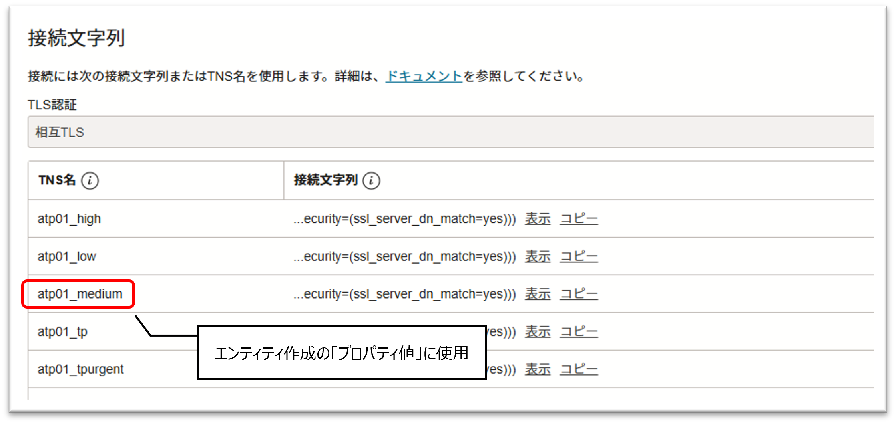
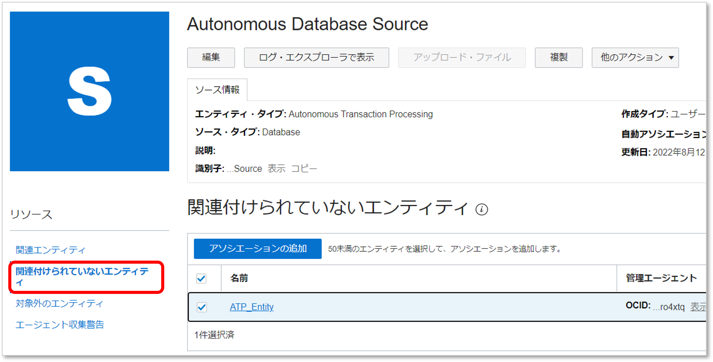

チュートリアル概要説明
Autonomous DatabaseにはOSログインできないため、ログ情報は表やビューにSQLでアクセスして取得する必要がありますが、O&Mの管理エージェントを使用することでLogging Analyticsへのアップロードを効率的に自動化することができます。
本チュートリアルはこちらのドキュメントを補足する内容となりますので、あわせてご参照ください。
所要時間 : 約30分
前提条件 :
- Logging Analyticsの有効化
参考：OCIのLogging AnalyticsでOCIの監査ログを可視化・分析する - Autonomous Databaseの作成
参考：101: ADBインスタンスを作成してみよう - Autonomous Databaseへアクセスするためのコンピュート・インスタンスの作成
参考：その3 - インスタンスを作成する - 管理エージェントはOracle Cloud Agentプラグインを使用
必要な権限 : 以下の権限設定が最低限必要となります。
- 動的グループ
all {resource.type = 'managementagent', resource.compartment.id ='<your compartment id>'}動的グループの概要と設定方法については以下を参照ください。
参考：OCI活用資料集：IDおよびアクセス管理 (IAM) 詳細 - ポリシー
allow service loganalytics to read loganalytics-features-family in tenancy allow dynamic-group <your dynamic-group-name> to {LOG_ANALYTICS_LOG_GROUP_UPLOAD_LOGS} in tenancy / compartment <your compartment name> allow dynamic-group <your dynamic-group-name> to use metrics in tenancy / compartment <your compartment name>
チュートリアル内の画面ショットについてはOracle Cloud Infrastructureの現在のコンソール画面と異なっている場合があります。
1. Oracle Cloud Agentプラグインの有効化
- コンピュートインスタンスの詳細画面で管理エージェントのプラグインを有効にします。

2. 管理エージェント ステータスの確認
-
監視および管理 > 管理エージェント > エージェント

-
有効化が完了していればアクティブとして表示されます。

3. Logging Analytics ロググループを作成する
-
監視および管理 > ログ・アナリティクス > 管理

-
ログ・グループの作成をクリックします。

-
名前を付けて作成します。

4. Logging Analytics エンティティを作成する
-
エンティティの作成をクリックします。

- 必要項目を入力し、エンティティの作成をクリックします。
エンティティ・タイプ: Autonomous Databaseのトランザクションタイプを選択
名前: 任意
管理エージェント・コンパートメント: 管理エージェントのコンパートメントを選択
管理エージェント（オプション）: 有効化した管理エージェントを指定
クラウド・リソースID（オプション）: ここでは空欄のままとします
プロパティ値: Autonomous Database管理コンソールの詳細画面にある「DB接続」のTNS名を参照（ここではmediumを指定）
- 参考：Autonomous Database DB接続情報

5. Autonomous Database ウォレットのダウンロード
- Autonomous Database のウォレットをダウンロードします。
参考：クレデンシャル・ウォレットを利用して接続してみよう
6. コンピュート・インスタンスにウォレットをコピーし、解凍する
- ターミナルソフト（tera term、WinSCP等）を利用して、コンピュートインスタンスにウォレットをコピーします。
[opc@demo-instance ~]$ ls Wallet_atp01.zip - ディレクトリを指定してウォレットを解凍します。
[opc@demo-instance ~]$ sudo unzip Wallet_atp01.zip -d /usr/share/oracle-cloud-agent/wallet Archive: Wallet_atp01.zip inflating: /usr/share/oracle-cloud-agent/wallet/ewallet.pem inflating: /usr/share/oracle-cloud-agent/wallet/README inflating: /usr/share/oracle-cloud-agent/wallet/cwallet.sso inflating: /usr/share/oracle-cloud-agent/wallet/tnsnames.ora inflating: /usr/share/oracle-cloud-agent/wallet/truststore.jks inflating: /usr/share/oracle-cloud-agent/wallet/ojdbc.properties inflating: /usr/share/oracle-cloud-agent/wallet/sqlnet.ora inflating: /usr/share/oracle-cloud-agent/wallet/ewallet.p12 inflating: /usr/share/oracle-cloud-agent/wallet/keystore.jks※解凍場所は任意ですが、oracle-cloud-agent ユーザーがReadできる安全なディレクトリを指定してください。
7. Autonomous Databaseのクレデンシャルとウォレットの詳細を管理エージェントに登録する
- 登録用のJSONファイルを作成します。
ここではホームディレクトリに作成しています。[opc@demo-instance ~]$ vi creds.json - 以下サンプルの<>部分を編集したものをJSONファイルに記述します。
Database_Entity_Name: #4で作成したエンティティ名
Database_User_Name/Database_Password: Autonomous Database作成時に設定したユーザー名とパスワード
SSL_Truststore_Location/SSL_Truststore_Password: ファイルのパスとウォレットダウンロード時のパスワード
SSL_Keystore_Location/SSL_Keystore_Password: ファイルのパスとウォレットダウンロード時のパスワード
SSL_Server_Certificate_Domain_Name: デフォルト設定のままとします{ "source": "lacollector.la_database_sql", "name": "LCAgentDBCreds.<Database_Entity_Name>", "type": "DBTCPSCreds", "usage": "LOGANALYTICS", "disabled": "false", "properties":[ {"name":"DBUserName","value":"<Database_User_Name>"}, {"name":"DBPassword","value":"<Database_Password>"}, {"name":"ssl_trustStoreType","value":"JKS"}, {"name":"ssl_trustStoreLocation","value":"<SSL_Truststore_Location>"}, {"name":"ssl_trustStorePassword","value":"<SSL_Truststore_Password>"}, {"name":"ssl_keyStoreType","value":"JKS"}, {"name":"ssl_keyStoreLocation","value":"<SSL_Keystore_Location>"}, {"name":"ssl_keyStorePassword","value":"<SSL_Keystore_Password>"}, {"name":"ssl_server_cert_dn","value":"yes"}] } - 記述例
{ "source": "lacollector.la_database_sql", "name": "LCAgentDBCreds.ATP_Entity", "type": "DBTCPSCreds", "usage": "LOGANALYTICS", "disabled": "false", "properties":[ {"name":"DBUserName","value":"ADMIN"}, {"name":"DBPassword","value":"Welcome12345#"}, {"name":"ssl_trustStoreType","value":"JKS"}, {"name":"ssl_trustStoreLocation","value":"/usr/share/oracle-cloud-agent/wallet/truststore.jks"}, {"name":"ssl_trustStorePassword","value":"Welcome12345#"}, {"name":"ssl_keyStoreType","value":"JKS"}, {"name":"ssl_keyStoreLocation","value":"/usr/share/oracle-cloud-agent/wallet/keystore.jks"}, {"name":"ssl_keyStorePassword","value":"Welcome12345#"}, {"name":"ssl_server_cert_dn","value":"yes"}] } - 以下のコマンドを実行し、管理エージェントにJSONファイルの内容を登録します。（<>部分にJSONファイルのパスを記載）
cat <path_to_JSON_file> | sh /var/lib/oracle-cloud-agent/plugins/oci-managementagent/polaris/agent_inst/bin/credential_mgmt.sh -o upsertCredentials -s logan管理エージェントを直接インストールする場合（オンプレミスのサーバーなど）は、”credential_mgmt.sh” が配置されているディレクトリが変わりますのでご注意ください。
- コマンド実行例（OPCユーザーで実行）
cat /home/opc/creds.json | sudo sh /var/lib/oracle-cloud-agent/plugins/oci-managementagent/polaris/agent_inst/bin/credential_mgmt.sh -o upsertCredentials -s logan - 成功すると以下のような表示が出ます。
Effect Credential Source ---------- ------------------ ------------------------------------------------- ADDED LCAgentDBCreds.ATP_Entity lacollector.la_database_sql Type: DBTCPSCreds [DBUserName, DBPassword, ssl_trustStoreType, ssl_trustStoreLocation, ssl_trustStorePassword, ssl_keyStoreType, ssl_keyStoreLocation, ssl_keyStorePassword, ssl_server_cert_dn] 1 credential(s) added to the logan service.
8. Logging Analytics ログソースを作成する
-
ソースの作成をクリック

-
各項目を入力し「SQL問合せ」にSQL文を記入、「構成」をクリックします。
名前：「Autonomous Database Source」を選択
ソース・タイプ：「Database」を選択
エンティティ・タイプ：Autonomous Databaseのトランザクションタイプを選択
SQL問合せ：ログを抽出するためのSQL文を記入
-
カラムにあわせたフィールド名をマッピングし、「完了」をクリックします。
遷移した次の画面で「ソースの作成」をクリックします。
- 参考：この記事で使用したサンプルSQL
select event_timestamp, dbusername, action_name, return_code, unified_audit_policies from unified_audit_trail where unified_audit_policies = 'ADB_ADMIN_AUDIT' order by event_timestamp; - 成功すると右上にメッセージがポップアップし、ソース一覧に作成したソースが表示されます。

9. Logging Analytics ログソースとエンティティの関連付け
-
作成しておいたエンティティをソースに紐づけます。 
-
作成しておいたロググループを指定し、「送信」をクリックします。成功するとポップアップでメッセージが表示されます。

10. ログの確認
-
確認のため、ADB管理画面の「データベース・アクション」からユーザーを作成、更新、削除などの操作をしてみます。

-
1分ほど待つとログがLogging Analyticsにアップロードされて、エクスプローラーに表示されました。

参考：管理エージェントのログファイルの配置場所
- Oracle Cloud Agent プラグインを使用している場合
/var/lib/oracle-cloud-agent/plugins/oci-managementagent/polaris/agent_inst/log/ - 管理エージェントを個別にインストールした場合
/opt/oracle/mgmt_agent/agent_inst/log/ - 主に以下のログファイルがインストールのトラブルシューティングに役立ちます。
mgmt_agent.log mgmt_agent_client.log mgmt_agent_logan.log